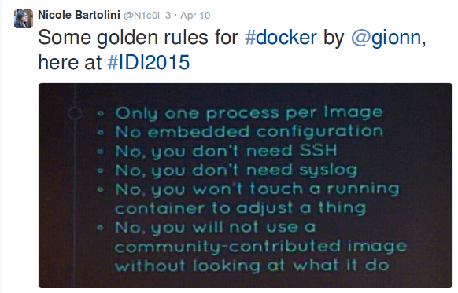
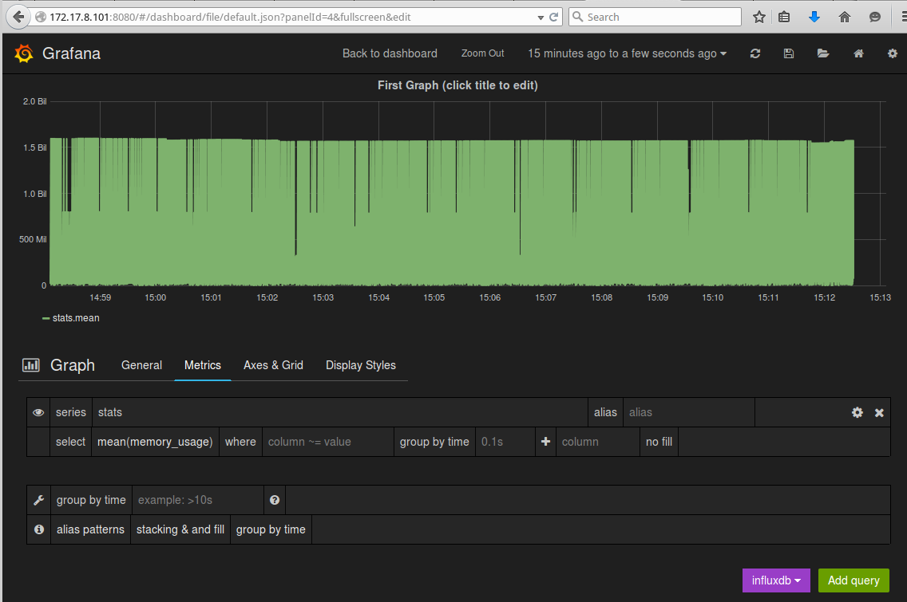

Scoutapark.com
A story of pragmatic dockerization
Created by:
Paul Czarkowski / @pczarkowski
Dan Sheppard
Welcome everybody, we're here to talk about scoutapark a very small one man startup with little more than a few big ideas and
how we're devopsing and dockering to help us get fulfill those big ideas.
Who are we ?
Dan Sheppard
* Product/Project Manager by trade
Who are we ?
Paul Czarkowski
* work at bluebox on private cloud as a service.
Who are we ?
Paul Czarkowski
* in my spare time I ....
WTF are we talking about?
What is ScoutaPark?
Business Challenges
How we use Docker
We want to talk about 3 main things -
What is ScoutaPark?
ScoutaPark is to public parks what Yelp is to restaurants.
Goals
Make money
Improve park experience for park patrons
But mostly make money
* Ad revenue model
Obstacles
No Money
No Time
No Developers
* Fulltime student, 3 kids, stay at home wife
Obstacle: No Money
Cheap/Free resources for startups
University programs
Incubator programs
Fiver, Craigslist, Elance, Freelancer
* Trello,Slack,bitbucket,RAX startup,etc
Obstacle: No Time
Be smart about choices, only implement critical features
Understanding the problem > Solving the problem
Present > Future
Devop all the things
* talk to potential customers
Obstacle: No Developers
Pragmatic Language Choices ( PHP )
Assume everything needs explained
Cheap outsourced developers for initial prototypes/MVP
Always be on the lookout for the dev partner
* cakephp
* Enough business, let's devop.
* docker all the things!
* php isn't your usual dockerable language
Golden rules of Docker
that you should ignore

* They're not actually rules, just BS from ppl who think they know better
http://github.com/factorish
* Toolset I developed for making legacy style apps act like 12factor
Dockerfile
FROM scoutapark/base
RUN \
DEBIAN_FRONTEND=noninteractive apt-get update && apt-get install -y wget && \
wget -O - http://dl.hhvm.com/conf/hhvm.gpg.key | apt-key add - && \
echo deb http://dl.hhvm.com/ubuntu trusty main | tee /etc/apt/sources.list.d/hhvm.list && \
apt-get update && apt-get install -yq \
hhvm-fastcgi nginx runit mysql-client
RUN \
curl -sSL -o /usr/local/bin/etcdctl https://s3-us-west-2.amazonaws.com/scoutapark/etcdctl-v0.4.6 \
&& chmod +x /usr/local/bin/etcdctl \
&& curl -sSL -o /usr/local/bin/confd https://s3-us-west-2.amazonaws.com/scoutapark/confd-0.7.1-linux-amd64 \
&& chmod +x /usr/local/bin/confd
ADD . /scoutapark
CMD ["/scoutapark/docker/bin/boot"]
VOLUME /scoutapark
* hhvm, nginx, runit
Docker Compose
nginx:
build: .
command: /scoutapark/docker/bin/boot nginx
links:
- mysql
- hhvm
ports:
- "8081:8080"
hhvm:
build: .
command: /scoutapark/docker/bin/boot hhvm
links:
- mysql
ports:
- 9000
mysql:
image: orchardup/mysql
ports:
- "3306:3306"
* removed env settings to fit on screen
* done! docker machine or coreos or deis and go!
Reality kicks in
Developers not ready for this.
Data Persistence.
I'm not building this for me.
* running windows ( WAMP ), Apache+modphp != nginx+hhvm
Config Management is dead.
Long live Config Management
Docker + Config Management
Chef,Puppet,Ansible
CM + Docker gives the best of both worlds.
Docker ~= packaging format
* At this point, all major CM has very functional docker integration.
Docker Cookbook
https://supermarket.chef.io/cookbooks/docker
Installs Docker
Provides resources for most docker actions.
Puppet and Ansible both have roughly equivalent tooling.
* installs docker on most OSes
Docker Cookbook
docker_container 'registry' do
detach true
port '5000:5000'
action [:run]
end
docker_image 'scoutapark_app' do
repository 'scoutapark/app:#{version}'
registry '127.0.01:5000'
action [:pull]
end
docker_container 'scoutpark_app' do
image "127.0.01:5000/scoutapark/app:#{version}"
port '8080:8080'
env 'MYSQL_HOST=10.0.0.22'
action [:run]
end
* Run a local registry ( backed by cloud files, code snipped )
Scoutapark Cookbook
Cookbook lives in app repo /cookbook
Vagrantfile for development environment
Meez for cookbook skeleton, testing tooling.
two role recipes - 'web' and 'database'
web can do nginx+hhvm, apache+mod_php, docker
database can do mysql or RAX CloudDB
local .chef/knife.rb
* sort of env sort of app cookbook, heavy usage of community cookbooks.
Scoutapark Cookbook
vagrant up
kitchen test
knife-rackspace
* as well as docker-compose we now have 3 new ways to run/test an environment.
CM + Docker
* we have chef serving up our docker containers
Docker logging
log to stdout/stderr
set log files in nginx to /dev/stdout and /dev/stderr
* key is to never write logs to a file in the container
Docker logging
# /etc/nginx/nginx.conf
daemon off;
user app app;
pid /app/nginx.pid;
error_log /dev/stderr;
access_log /dev/stdout;
...
* example nginx config logs set to /dev/stdout
Docker logging
Logspout!
sends docker logs -> external syslog
docker_container 'gliderlabs/logspout' do
detach true
volume '/var/run/docker.sock:/tmp/docker.sock:ro'
command syslog://logs.papertrailapp.com:55555
name 'logspout'
end
* logspout by progium saves a ton of work. as long as all apps log to stdout
Docker monitoring
Docker uses libcontainer for cgroups/namespaces.
metrics exposed in weird places in /proc
Example - /sys/fs/cgroup/memory/lxc/[longid]/
Hard to track where all of these metrics live.
* docker used to use lxc, now accesses cgroups/namespaces via libcontainer
Docker monitoring
CAdvisor
Native docker metrics
Web UI
Rest API
InfluxDB and Prometheus outputs.
Probably needs to support Graphite.
* Cadvisor was written at google for kubernetes, but runs well for any dockered system
Docker monitoring
CAdvisor
docker_container 'google/cadvisor:latest' do
detach true
volume [
'/:/rootfs:ro',
'/var/run:/var/run:rw',
'/sys:/sys:ro',
'/var/lib/docker/:/var/lib/docker:ro'
]
port '127.0.0.1:8080:8080'
name 'cadvisor'
end
* the recipe that I install docker with also starts cadvisor.
Docker monitoring
CAdvisor::InfluxDB::Grafana

* sensu/collectd -> influxdb for non-containers
Configs in Containers
templating engine written in GO.
key/value pairs from a number of supported storage engines.
Environment Variables, ETCD, Consul, etc.
* we're using confd, is a templating engine written in GO
Configs in Containers
# conf.d/app_Config_database.php.toml
[template]
src = "app_Config_database.php"
dest = "/scoutapark/app/Config/database.php"
owner = "app"
group = "app"
mode = "0750"
keys = [
"/db"
]
check_cmd = "apachectl configtest"
reload_cmd = "apachectl restart"
* confd metadata
Configs in Containers
# templates/app_Config_database.php
class DATABASE_CONFIG {
public $default = array(
'datasource' => 'Database/Mysql',
'persistent' => false,
'host' => '{{ getv "db/host" }}',
'login' => '{{ getv "db/user" }}',
'password' => '{{ getv "db/pass" }}',
'database' => '{{ getv "db/name" }}',
'prefix' => 'scout_',
'encoding' => 'utf8',
);
}
* only template config options that change from env to env
Configs in Containers
#!/bin/bash
# bin/boot
export DB_HOST=${DB_HOST:-"mysql"}
export DB_PORT=${DB_PORT:-"3306"}
export DB_USER=${DB_USER:-"scoutapark"}
export DB_PASS=${DB_PASS:-"scoutapark"}
export DB_DATA=${DB_NAME:-"scoutapark"}
confd -onetime -config-file /scoutapark/docker/confd_env.toml
exec nginx
wait
* bash script set to CMD of container
Configs in Containers
$ docker run -d \
-e DB_HOST=10.0.0.1 \
-e DB_USER=scout \
-e DB_PASS=scout \
-e DB_NAME=scout \
--name scoutapark_web \
-p 8080:8080 \
scoutapark/web bin/boot
* regular docker run command
The Future
* what we're doing now isn't exciting, what I'm going to do is.
The Future
Service Discovery
confd <3 service discovery
run confd in daemon mode
run etcd or consul
use {{ getenv 'ETCD_HOST' }} for env vars
* perfect example is Confd + SD
The Future
Docker based platform
CoreOS + fleet
Kubernetes
Deis
Mesos
* don't want to accidently build our own platform
The Future
Data Persistence
Use *aaS where it makes sense
Continue to use Chef where it doesn't.
* We want to outsource as much data persistence as possible where it makes sense.
THE END
Paul Czarkowski / @pczarkowski
Dan Sheppard